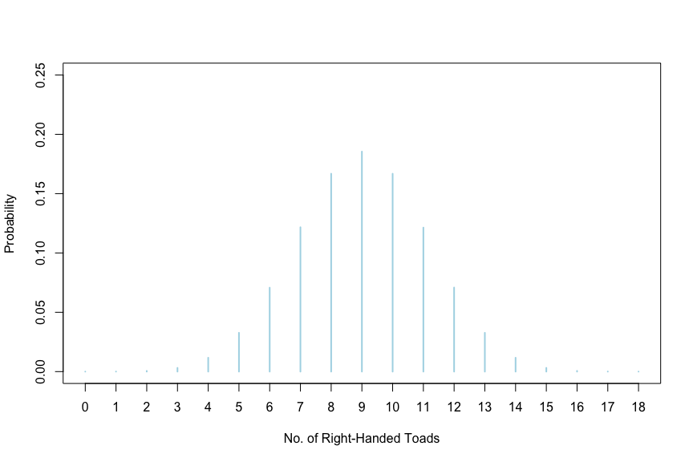
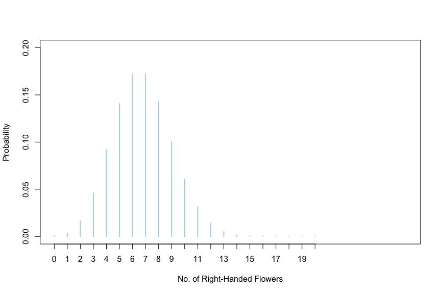
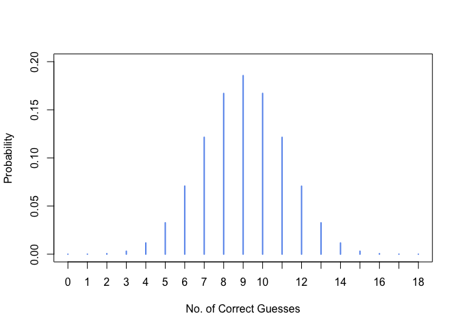
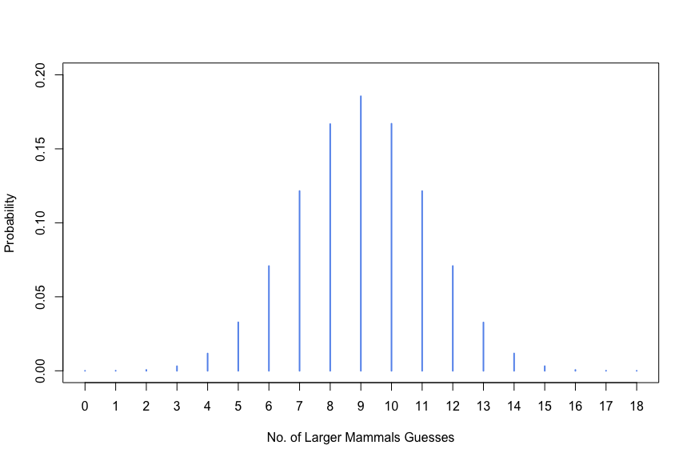

We will begin with the toad example.The series of commands below will accomplish the following. We first create a sample size of 10 million observations (here toads). We then use the rbinom() command to generate binomial probabilities of observing, in this sample, 0, 1, 2, 3, …, 17, 18 right-handed toads, under the assumption that right-handed toads occur with probability = 0.5. We then construct a frequency table that we call tab.x, and then a relative frequency table that we have named proptab.x. The last command plots these relative frequencies.
n <- 10000000
x <- rbinom(n, 18, p=0.5)
tab.x <- table(x)
data.frame(tab.x)## x Freq
## 1 0 47
## 2 1 713
## 3 2 5817
## 4 3 31301
## 5 4 116881
## 6 5 327035
## 7 6 707358
## 8 7 1216675
## 9 8 1668030
## 10 9 1854476
## 11 10 1667703
## 12 11 1213769
## 13 12 708562
## 14 13 326785
## 15 14 116805
## 16 15 31424
## 17 16 5868
## 18 17 705
## 19 18 46proptab.x <- (table(x)/n)
data.frame(proptab.x)## x Freq
## 1 0 0.0000047
## 2 1 0.0000713
## 3 2 0.0005817
## 4 3 0.0031301
## 5 4 0.0116881
## 6 5 0.0327035
## 7 6 0.0707358
## 8 7 0.1216675
## 9 8 0.1668030
## 10 9 0.1854476
## 11 10 0.1667703
## 12 11 0.1213769
## 13 12 0.0708562
## 14 13 0.0326785
## 15 14 0.0116805
## 16 15 0.0031424
## 17 16 0.0005868
## 18 17 0.0000705
## 19 18 0.0000046plot(proptab.x, ylab="Probability", xlab="No. of Right-Handed Toads", xlim=c(0,18), ylim=c(0,0.25), col="lightblue") 
Notice that the plot peaks at 9 right-handed toads because that is what we said with the p=0.5 switch – half the toads sampled should be right-handed.
Now, assume we sampled 18 toads and exactly 14 turned out to be right-handed. This means in our sample we have 14/18 right-handed toads. This could happen by chance of course but if the TRUE distribution is an equal chance of right-handed and left-handed toads then we should have ended up with only 9 right-handed toads.
So we set about asking: What would be the probability of getting 14 or more toads if in the population right-handed toads occur with \(p=0.5\)? We could calculate this from proptab.x as \(0.0116489 + 0.0031092 + ... + 0.0000052\) but this would be inefficient. Instead, the code below will do this very calculation for us.
sum(proptab.x[15:19])## [1] 0.0154848Because we have a two-tailed test we would have to allow for seeing 4 or fewer right-handed toads. Given the symmetry of the distribution this means doubling up the sum we arrived at above. That is, the probability of seeing either 14 or more right-handed toads or 4 or fewer right-handed toads if \(H_0\) were true is 2 * sum(proptab.x[15:19])
Had we decided before conducting the test to Reject \(H_0\) if the \(P-value\) were \(\leq 0.05\) then we would have to reject the belief that right-handed and left-handed toads occur with equal frequency in the population. Why this decision? Because 0.0309696 is less than \(0.05\)
What if we had decided to Reject \(H_0\) if the \(P-value\) were \(\leq 0.01\)? Why then we would be unable to reject the belief that right-handed and left-handed toads occur with equal frequency in the population.
Here we take up the case of a situation when \(H_0\) is not rejected, and we do so with data on mud plantains wherein left- and right-handed individuals are believe to occur in a 1:3 ratio. A sample of 27 mud plantains from a particular crossing (see Example 6.4 on page 161) yielded 6 left-handed flowers. Do these data support the belief that the crossing should yield left- and right-handed flowers in a 1:3 ratio? We start by setting forth the hypotheses and our decision rule.
\(H_0: \text{ Left-handed and right-handed offspring occur with a 1:3 ratio } (p=0.25)\)
\(H_A: \text{ Left-handed and right-handed offspring do not occur with a 1:3 ratio } (p \neq 0.25)\)
Let us decide to Reject \(H_0\) if the \(P-value \leq 0.05\)
Let us generate the distribution to be expected if \(H_0\) were true (called the Null distribution).
n <- 10000000
x <- rbinom(n, 27, 0.25)
tab.x <- table(x); tab.x## x
## 0 1 2 3 4 5 6 7 8
## 4210 37871 164818 458430 915950 1407850 1719474 1718781 1431778
## 9 10 11 12 13 14 15 16 17
## 1007640 605424 312024 137834 53390 17719 5122 1351 285
## 18 19 20
## 43 5 1proptab.x <- (table(x)/n); proptab.x## x
## 0 1 2 3 4 5 6
## 0.0004210 0.0037871 0.0164818 0.0458430 0.0915950 0.1407850 0.1719474
## 7 8 9 10 11 12 13
## 0.1718781 0.1431778 0.1007640 0.0605424 0.0312024 0.0137834 0.0053390
## 14 15 16 17 18 19 20
## 0.0017719 0.0005122 0.0001351 0.0000285 0.0000043 0.0000005 0.0000001plot(proptab.x, ylab="Probability", xlab="No. of Right-Handed Flowers", xlim=c(0,27), ylim=c(0,0.20), col="lightblue") 
If \(H_0\) were true we should have seen 0.25 * 27 left-handed flowers. Now, what is the probability of seeing the 6 left-handed flowers that we saw in this sample?
sum(proptab.x[1:7])## [1] 0.4708603Since it is a two-sided test we would have to double this probability to get 0.9417206 and this \(P-value\) is far greater than \(0.05\). Hence we fail to reject \(H_0\). That is, the sample data provide insufficient evidence to conclude that left- and right-handed flowers occur with something other than a 1:3 ratio.
Caution is warranted of course. Why? Because \(H_0\) could still be false but somehow our sample gave us the wrong result by chance alone. Perhaps had we drawn 100 flowers at random our conclusion would have been to reject \(H_0\). As a result, whenever we fail to reject \(H_0\) we will conclude that the data provide evidence that supports \(H_0\).
Assume that a study is designed to test whether daughters resemble their fathers. Participants are shown one photo of a girl and photos of two adult men, and then asked to guess which of the two men is the girl’s father. If there is no resemblance in the population then the probability of the participant selecting the actual father should at most be equal to a guess – 50:50, i.e., \(p=0.5\). If there is a resemblance then the probability of picking the actual father should be greater than 50:50 (i.e., \(p > 0.5\)).
We will begin by setting up the hypotheses and our decision rule.
\(H_0: \text{ Participants pick the actual father correctly at most half the time } (p \leq 0.5)\)
\(H_A: \text{ Participants pick the actual father correctly more than half the time } (p > 0.5)\)
Let us decide to reject \(H_0\) if the \(P-value \leq 0.05\). Now we generate the Null distribution
n <- 10000000
x <- rbinom(n, 18, 0.5)
tab.x <- table(x); tab.x## x
## 0 1 2 3 4 5 6 7 8
## 45 699 5898 31434 116486 326743 708492 1214020 1668471
## 9 10 11 12 13 14 15 16 17
## 1854259 1668937 1214528 708844 326203 117001 31397 5797 705
## 18
## 41proptab.x <- (table(x)/n); proptab.x## x
## 0 1 2 3 4 5 6
## 0.0000045 0.0000699 0.0005898 0.0031434 0.0116486 0.0326743 0.0708492
## 7 8 9 10 11 12 13
## 0.1214020 0.1668471 0.1854259 0.1668937 0.1214528 0.0708844 0.0326203
## 14 15 16 17 18
## 0.0117001 0.0031397 0.0005797 0.0000705 0.0000041plot(proptab.x, ylab="Probability", xlab="No. of Correct Guesses", xlim=c(0,18), ylim=c(0,0.20), col="cornflowerblue") 
Now assume in a sample of 18 participants some 13 successfully guessed the actual father. Does this suggest that there is a resemblance? We can start by calculating how likely it would be, if \(H_0\) were true, for 13 or more participants to correctly identify the actual father.
sum(proptab.x[14:19])## [1] 0.0481144This turns out to be 0.0481144 and is less than 0.05. Hence we can reject \(H_0\); the data provide sufficient evidence to conclude that daughters do indeed resemble their fathers.
As a rule, remember that one-sided hypothesis tests make it very easy to reject \(H_0\) and hence open us up to making mistakes more often than do two-sided tests. Note also that one-sided and two-sided hypotheses and tests are also referred to as one-tailed and two-tailed hypotheses and tests.
Out of 18 of the largest mammal species in the Americas 16 were found to be smaller on islands than on the mainland. Do these data suggest that large mammals are likely to differ in size between islands and the mainland in a particular direction? That is, for example, that mammals will be smaller on islands? Use the conventional significance levels of \(\alpha = 0.05\)
I’ll generate the Null distribution under the following hypotheses: \(H_0: \text{ Large mammals occur as often on islands as on the mainland } (p = 0.5)\)
\(H_A: \text{ Large mammals do not occur as often on islands as on the mainland } (p \neq 0.5)\)
Set \(\alpha = 0.05\)
We know that if \(H_0\) were true we should see the same proportion of larger/smaller mammals on the islands as on the mainland (i.e., \(p=0.50\)). The sample proportion is: \(\hat{p}=\dfrac{16}{18} = 0.8888\)
The code below will generate, tabulate, and plot the Null distribution (i.e., when \(H_0\) is true)
n <- 10000000
x <- rbinom(n, 18, 0.5)
tab.x <- table(x); tab.x## x
## 0 1 2 3 4 5 6 7 8
## 31 722 5876 30909 116665 327577 707778 1214700 1667298
## 9 10 11 12 13 14 15 16 17
## 1855202 1669545 1214386 708030 326478 117174 31118 5740 732
## 18
## 39proptab.x <- (table(x)/n); proptab.x## x
## 0 1 2 3 4 5 6
## 0.0000031 0.0000722 0.0005876 0.0030909 0.0116665 0.0327577 0.0707778
## 7 8 9 10 11 12 13
## 0.1214700 0.1667298 0.1855202 0.1669545 0.1214386 0.0708030 0.0326478
## 14 15 16 17 18
## 0.0117174 0.0031118 0.0005740 0.0000732 0.0000039plot(proptab.x, ylab="Probability", xlab="No. of Larger Mammals Guesses", xlim=c(0,18), ylim=c(0,0.20), col="cornflowerblue") 
How likely is it then that we would have seen 16 larger mammal species on the mainland? { r 8} sum(proptab.x[17:19])
Since it is a two-tailed test we will have to double this to get the \(P-value:\) 0.0013022 and this tells us that the resulting \(P-value\) is quite a bit less than \(\alpha = 0.05\). Hence we reject \(H_0\). The data suggest that large mammal species tend to be larger on the mainland than on islands.
\(H_0: \text{ Subjects pick the mother at most half the time } (p \leq 0.5)\)
\(H_A: \text{ Subjects pick the mother more than half the time } (p > 0.5)\)
Let \(\alpha = 0.05\)
This is a one-tailed test.
The test statistic would be the proportion of correct picks seen in the sample.
n <- 10000000
x <- rbinom(n, 18, 0.5)
tab.x <- table(x); tab.x## x
## 0 1 2 3 4 5 6 7 8
## 34 676 5890 31340 116732 327642 707973 1213672 1670133
## 9 10 11 12 13 14 15 16 17
## 1854021 1670069 1212136 708438 326233 117086 31280 5923 688
## 18
## 34proptab.x <- (table(x)/n); proptab.x## x
## 0 1 2 3 4 5 6
## 0.0000034 0.0000676 0.0005890 0.0031340 0.0116732 0.0327642 0.0707973
## 7 8 9 10 11 12 13
## 0.1213672 0.1670133 0.1854021 0.1670069 0.1212136 0.0708438 0.0326233
## 14 15 16 17 18
## 0.0117086 0.0031280 0.0005923 0.0000688 0.0000034sum(proptab.x[8:19])## [1] 0.8809713If \(H_0\) were true we would see 7 or more correct picks in a sample of 18, by chance alone, with a \(P-value\) of 0.8809713. Since this is \(> 0.05\) we fail to reject \(H_0\). That is, the data provide insufficient evidence to conclude that subjects pick the mother at most half the time (i.e., that sons resemble their mothers).